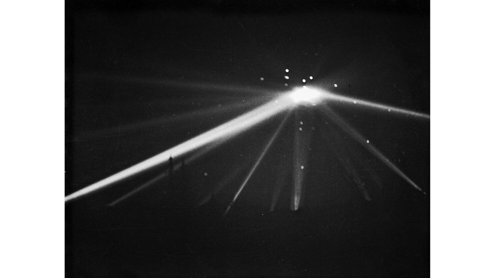
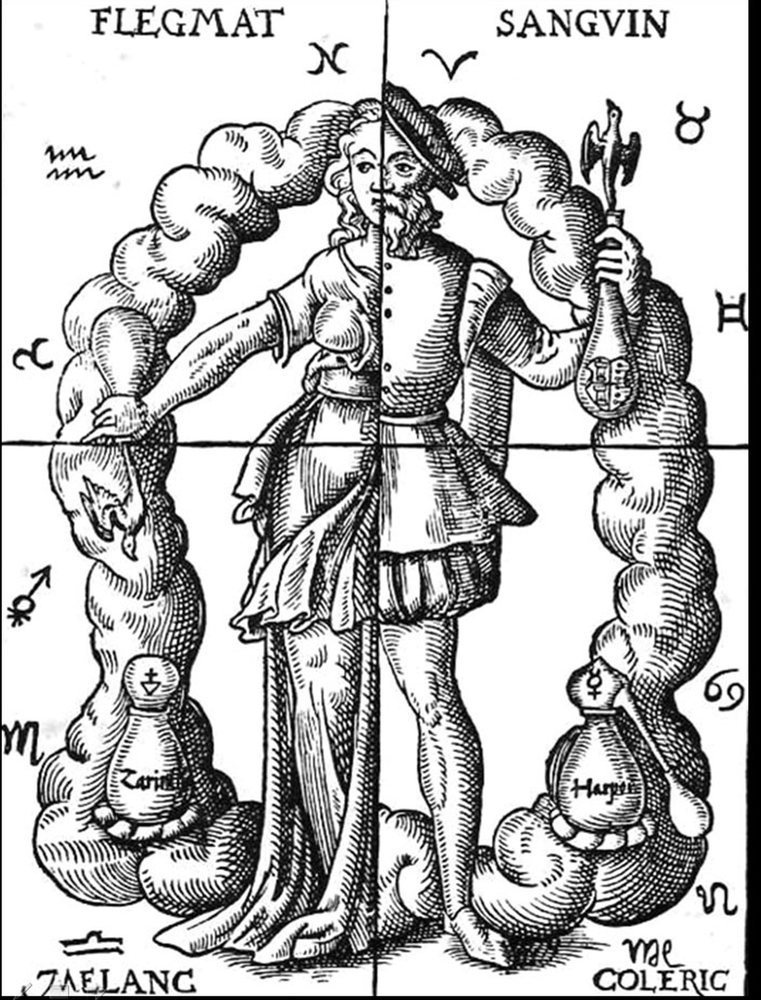

Om Podcasten
Kuriosa är en podcast som behandlar allt ifrån Konspirationsteorier, samhällsfenomen och psykologi till exoplaneter, historia och geografi!
Nya avsnitt varannan måndag! Lyssna där podcasts finns eller följ vår feed!
Senaste Avsnitten

Avsnitt 3: UFO-incidenter
Lyssna på ett smakprov av när Anton och Tim behandlar varsin påstådd UFO-sighting!

Avsnitt 2: Humoralpatologi och miasmateori
Lyssna på ett smakprov av när Anton och Tim behandlar forna medicinska teorier!